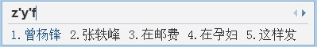

中国五子棋棋手等级分注册信息（广东）
首页
广东五子棋
#1 中国五子棋棋手等级分注册信息（广东） 作者：无尽 发表时间：2013-8-27 18:16:13
今天，中国棋院公布了2013年中国五子棋参赛棋手第二次注册名单，其中广东名单如下：
中国五子棋棋手等级分注册信息表
（2013年第二次注册） |
| | | | |
| 序号 | 申报备案日期 | 姓名 | 性别 | 户口所在地 |
|
| 00292 | 2013年7月 | 何骏 | 男 | 广东 |
| 00293 | 2013年7月 | 陈子敏 | 女 | 广东 |
| 00294 | 2013年7月 | 吴慧珊 | 女 | 广东 |
| 00295 | 2013年7月 | 罗佳敏 | 女 | 广东 |
| 00296 | 2013年7月 | 郑超鸿 | 男 | 广东 |
| 00297 | 2013年7月 | 江齐文 | 男 | 广东 |
| 00298 | 2013年7月 | 张艳萍 | 女 | 广东 |
| 00299 | 2013年7月 | 陈经辉 | 男 | 广东 |
此外，广东籍注册棋手还有以下几位：
合共14人。
［ 小红眼镜同学于 2013-8-27 22:40:17 时花20金币送鲜花一朵］
［此帖子已被 无尽 在 2013-8-28 12:12:41 编辑过］
#2 Re:中国五子棋棋手等级分注册信息（广东） 作者：战神巴蒂 发表时间：2013-8-27 19:04:23
小红眼镜居然是广东人。。。。。。
#3 Re:中国五子棋棋手等级分注册信息（广东） 作者：鱼岛岛主 发表时间：2013-8-27 19:08:05
好像是梅州的 ［ 无尽同学于 2013-8-27 19:11:35 时花20金币送鲜花一朵］
#4 Re:中国五子棋棋手等级分注册信息（广东） 作者：伤情路 发表时间：2013-8-27 22:18:17
小红眼镜名字曾杨锋，写错了
［ 无尽同学于 2013-8-28 12:13:14 时花20金币送鲜花一朵］
#5 Re:中国五子棋棋手等级分注册信息（广东） 作者：鱼岛岛主 发表时间：2013-8-27 22:23:57

#6 Re:中国五子棋棋手等级分注册信息（广东） 作者：小红眼镜 发表时间：2013-8-27 22:39:49

#7 Re:中国五子棋棋手等级分注册信息（广东） 作者：一块金子 发表时间：2013-8-27 22:59:14
小红就快成上海人了